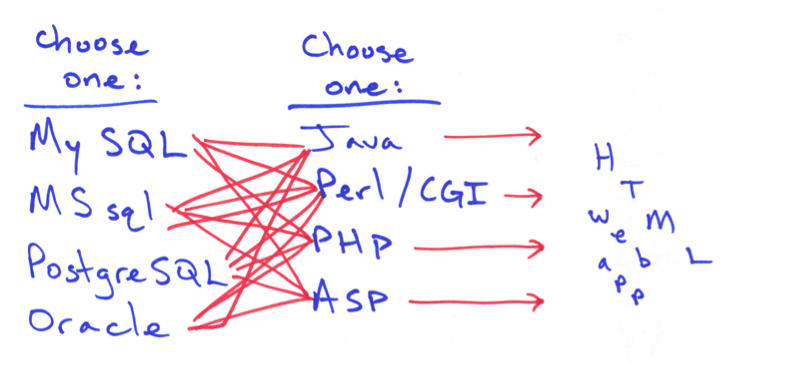
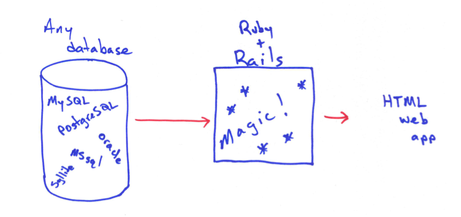
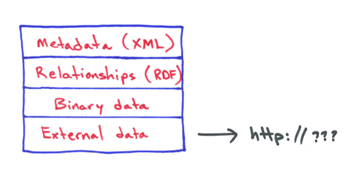
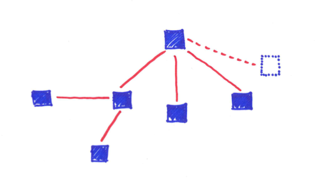

One of the Many Heads of Hydra
at the Rock and Roll Hall of Fame
Adam Wead
Systems and Digital Collections Librarian
Sponsored by
OhioNET
Introduction

Hydra webinar in three parts
- Background: Using Hydra as a digital asset manager
- Technical Matters: An overview of Hydra's technical components and what they're all about
- Building a Hydra Head: Starting down the path to building your own head
There will a question and answer period after each part to help break-up the format
Hydra at the Rockhall
Hydra satisfies all our needs in ways that other asset managers could not
- 2010: Began R+D for an asset manager
- 2011: went into production
- Only video at the moment:
- 1650+ videos of institutional content, incl. induction ceremonies and performance series
- 175 TB of data: 95% uncompressed video files stored on LTO tape, and not hard disk
- PBCore metdata schema
- compressed H264 files for streaming
- records get exported to a discovery interface
Today's Takeaways
What digital repository solution is best for me?
- the Hydra Philosophy
- current trends in repository applications
- basic understanding of each elements in the Hydra stack
- what I will need to develop and use Hydra
- how to get started with Hydra
Part 1: Conceptual Background
The what's and who's of Hydra and asset managers in general
What is Hydra?
Conceptual level
- Community: software developers, end users, adopters and institutions
- Collaboration: shared solutions, or "heads," supported by a common core
Philosophy
One body, many heads
If you want to go fast, go alone; if you want to go far, go together
Hydra Fundamental Assumption
No single institution can resource the development of a full range of solutions on its own
Who is Hydra?
- started in 2008 with three universities
- now includes over 19 partner institutions
- many additional adopters
- governed by a steering group, with partners meeting quarterly
Current Hydra Partners
- Stanford University
- DuraSpace
- Northwestern University
- Indiana University
- The Royal Library of Denmark
- Boston Public Library
- Virginia Tech
- University of Hull
- MediaShelf
- Columbia University
- London School of Economics
- Data Curation Experts
- Duke University
- University of Virginia
- University of Notre Dame
- Penn State University
- Rock and Roll Hall of Fame
- WGBH
- Yale University
Hydra Adopters
- Spoken Word Services (Glasgow Caledonian University)
- University College Dublin
- University of Illinois at Urbana-Champaign
- The Digital Repository of Ireland
- Museum of the Performing Arts (MAE) of the Theatre Institute of Barcelona
- Johns Hopkins University
- Tufts University
Scope of Current Solutions
- image collections
- media content
- archicval collection presentation
- institutional repositories
- electronic theses and dissertations
- visit http://projecthydra.org/
- includes links to their Hydra-based websites
- screencasts
Challenges with digital media
- identifying content types: images, audio, text, pdf, video, etc.
- description, i.e. metadata
- storage and preservation
- lifecycle: identify things that need to be deleted, kept, or migrated to newer formats
- format conversions, such as creating derivative files
- workflows for ingesting new content correctly, i.e. required information, supported formats
- searching, updating, viewing your content
- controlling access
Archiving vs. Managing
- Libraries approach digital materials differently than other institutions
- Digital archiving implies another set of features in addition to basic digital asset management features
Archival Needs
- presentation of multiple items as a coherent unit, i.e. collections
- hierarchical organization with varied levels of description
- accessioning of content
- top-down, collection-level driven
Digital Repository
- generally more item-level driven
- bottom-up
- collections or groups, but not in the archival sense
Survey of Solutions
What's out there now to use as my digital repository or asset manager?
Proprietary solutions
Generally built around an existing library product, such as an ILS, or focus on specific type of content or area:
- ContentDM (Innovative)
- Rosetta (ExLibris)
- Canto (favors text documents for businesses)
- Piction (favors images for business, gov. and museums)
- and many, many more
Open source solutions
Built on a specific technological platform, often using Fedora
- DSpace
- Islandora
- RODA (http://roda+community.org/)
- Omeka
- many others ...
Asset Management Pitfalls
Looking for a repository solution? Watch out for ...
Assumptions
- "turnkey" solutions aim for the common denominator
- pre-fab modeling: organization of content, collections, rights management
- media types: A/V formats, file formats, data
- metadata: Dublin Core, EAD, or MARC
Customizations
- your local implementation is limited to the constraints imposed by these assumptions
- you will need to customize to overcome any of these constraints
- you may need to customize just to get it to run "out of the box"
- you'll need to customize even if it does run "out of the box" and you accept its constraints
- did I mention you'll probably need to customize?
Costs
- fiscal: $$$
- technological: servers, storage, equipment
- sociological: software developers, library technologists, users
Bundles
- "stack" solutions
- combination of tools and procedures grouped into a collective product
- don't work well together
- aren't targeted towards libraries or archives
Hydra Fundamental Assumption
No single system can provide the full range of repository-based solutions for a given institution's needs
What's good about Hydra
- makes no assumptions about your data (well, actually one assumption)
- can model anything
- using any metadata standard
- using any content
- stored anywhere
- accessed by anyone or no one
- presented as anything (using HTML and Javascript)
- underlying technologies are abstracted (Fedora and Solr)
- it's "free" and open-source
What's not-so-good about Hydra
- technologically daunting -- you're going to be overwhelmed. that's okay
- deep "stack" of technologies
- tied to the Ruby-on-Rails framework
- favors a Unix environment
- requires in-house expertise/ability/willingness
- not a turnkey solution (yet...)
- no Hydra hosting options
Why should I use it?
- Decide for yourself
- I'm not here to sell it to you
- Everything has costs
Any solution will require technical expertise and customization
- getting the system running
- learning
- integrating with existing systems
Why not?
- no "magic bullet" proprietary solution
- vendor may limit options
- no "magic bullet" open source solution
- avoiding reinventing the wheel
- get started quickly with a rich set of features
- draw on a shared community and their technological resources
end of Part 1
Questions?
Part 2: Technical Matters
An overview of Hydra's technical components and what they're all about
What is Hydra, technically?
- it's a web application
- specifically, it's a Ruby on Rails web application
- Built using the Blacklight and Hydra gems
- Fedora repository for creating and describing content
- Solr for searching
-
Various other "Rails-isms" for additional features
- User accounts
- Authentication and authorization
- MySQL database or other RDMS
- JQuery javascript library for building an interface
What is Ruby on Rails?
- computer language (Ruby)
- framework for web applications (Rails)
- geared towards rapid development
- modularized features with gems
Without Rails...
With Rails...
How to Use Rails
I really don't care about all the details
- convention over configuration
- auto-generate as much as possible:
- database table names
- field names
- relationships between tables
- most of the application code itself
- rely on gems as much as possible
Using a Database
- data is stored in tables
- some data is easier to model than others
- modeling library data is hard
{kind=link}
Where it goes wrong
- database tables get unwieldy when dealing with amorphous content
- extending/changing/rearranging takes a lot of work
- storing digital content in tables is problematic
- data and metadata get separated
We need ...
- something flexible and extensible
- for digital objects
- as a repository architecture
F E D O R A
- flexible
- extensible
- digital
- object
- repository
- architecture
Fedora Features
- models the content, not the data
- multiple means of description and arrangment
- stores metadata and content data together
- supports a wide variety of storage options
- fundamental repository functions are built-in
- uses RDF for relationships, XML for metadata
Example Digital Object
Object Relationships
Fedora Hangups
- slow
- it's just a backend
- can't search like a traditional database
- requires a RDMS for searching RDF relationships
- if only we could search Fedora like an SQL database...
Solr
a search engine, all wrapped up and ready to go
About Solr
- originated as the Excite's search engine
- went open source, taken up by the Apache Foudation
- proprietary branch: Lucene
- open-source branch: Solr
What does Solr do, exactly?
- Indexes a sets of text documents
-
Provides many of the core-features of a modern-day information retrieval system:
- boolean matching
- vector space model matching
- tunable relevance ranking
- stop word removal
- stemming
- support for multiple languages
- facet queries
- very fast, easy to run
What's not to like?
Blacklight
- Rails gem for faceted search and discovery
- designed for library data
- provides a working interface to Solr
-
includes a basic web interface for:
- searching with queries and facets
- displaying lists of search results
- displaying individual item records
-
additional functions:
- user accounts (using a Rails gem called Devise)
- bookmarking
The Hydra Stack
putting it all together
- stores both content and metadata in Fedora
- manages the relationships between your objects
- indexes metadata into Solr for searching (so you don't have to mess with configuring solr)
- uses the Blacklight gem to provide the search and retrieval interface
What's left...
- you develop the interface to add/edit/delete content and link objects to one another
- build additional features and the user interface design
- accomplished mostly with gems